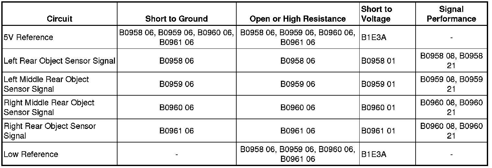

B0961
DTC B0958, B0959, B0960, or B0961
Diagnostic Instructions
* Perform the Diagnostic System Check - Vehicle (Initial Inspection and Diagnostic Overview) prior to using this diagnostic procedure.
* Review Strategy Based Diagnosis (Initial Inspection and Diagnostic Overview) for an overview of the diagnostic approach.
* Diagnostic Procedure Instructions (Initial Inspection and Diagnostic Overview) provides an overview of each diagnostic category.
DTC Descriptors
DTC B0958 01
- Parking Aid Rear Sensor 1 (Left Corner) Circuit-Short to Battery
DTC B0958 06
- Parking Aid Rear Sensor 1 (Left Corner) Circuit-Short to Ground or Open
DTC B0958 08
- Parking Aid Rear Sensor 1 (Left Corner) Circuit-Signal Invalid
DTC B0958 21
- Parking Aid Rear Sensor 1 (Left Corner) Circuit-Incorrect Period
DTC B0959 01
- Parking Aid Rear Sensor 2 (Left Middle) Circuit-Short to Battery
DTC B0959 06
- Parking Aid Rear Sensor 2 (Left Middle) Circuit-Short to Ground or Open
DTC B0959 08
- Parking Aid Rear Sensor 2 (Left Middle) Circuit-Signal Invalid
DTC B0959 21
- Parking Aid Rear Sensor 2 (Left Middle) Circuit-Incorrect Period
DTC B0960 01
- Parking Aid Rear Sensor 3 (Right Middle) Circuit-Short to Battery
DTC B0960 06
- Parking Aid Rear Sensor 3 (Right Middle) Circuit-Short to Ground or Open
DTC B0960 08
- Parking Aid Rear Sensor 3 (Right Middle) Circuit-Signal Invalid
DTC B0960 21
- Parking Aid Rear Sensor 3 (Right Middle) Circuit-Incorrect Period
DTC B0961 01
- Parking Aid Rear Sensor 4 (Right Corner) Circuit-Short to Battery
DTC B0961 06
- Parking Aid Rear Sensor 4 (Right Corner) Circuit-Short to Ground or Open
DTC B0961 08
- Parking Aid Rear Sensor 4 (Right Corner) Circuit-Signal Invalid
DTC B0961 21
- Parking Aid Rear Sensor 4 (Right Corner) Circuit-Incorrect Period
Diagnostic Fault Information

Circuit/System Description
Each object sensor is a 3-wire sensor that is both a transmitter and a receiver that includes a signal circuit, a low reference circuit, and an 8-volt supply voltage circuit. The object alarm module supplies 8 volts to the object sensors via the object sensor supply voltage circuit and provides ground via the low reference circuit. The object alarm module triggers the sensors in a sequential loop. After each sensor transmits, the object alarm module uses the echo or signal return to calculate the distance and position of an object from the rear bumper.
Conditions for Running the DTC
* Ignition voltage is between 9-16 volts.
* The vehicle is in REVERSE
Conditions for Setting the DTC
B0958 01, B0959 01, B0960 01, or B0961 01
The object alarm module circuit is short to battery.
B0958 06, B0959 06, B0960 06, or B0961 06
The object alarm module circuit is short to ground or open.
B0958 08, B0959 08, B0960 08, or B0961 08
The object alarm module signal circuit is invalid.
B0958 21, B0959 21, B0960 21, or B0961 21
The object alarm module has an incorrect period.
Action Taken When the DTC Sets
* The object alarm module commands the telltale red indicator ON.
* The object alarm module sends a serial data communication message to the instrument panel cluster (IPC) to display SERVICE PARK ASSIST message in the driver information center (DIC), and the chime will sound.
Conditions for Clearing the DTC
* This DTC will change from current to history when the fault is no longer present.
* A history DTC will clear after 100 consecutive ignition cycles, if the condition for the malfunction is no longer present.
Reference Information
Schematic Reference
Object Detection Schematics ([1][2]Collision Avoidance and Parking Assist Systems)
Connector End View Reference
Component Connector End Views (Connector Views)
Description and Operation
Object Detection Description and Operation (Rear Park Assist) (Description and Operation)
Electrical Information Reference
* Circuit Testing (Component Tests and General Diagnostics)
* Connector Repairs (Component Tests and General Diagnostics)
* Testing for Intermittent Conditions and Poor Connections (Component Tests and General Diagnostics)
* Wiring Repairs (Component Tests and General Diagnostics)
Scan Tool Reference
Control Module References (Programming and Relearning) for scan tool information
Circuit/System Verification
1. Verify that DTC B1E3A is not current.
• If B1E3A is current, refer to DTC B1E3A (B1E3A) .
2. Park brake disabled, transmission in REVERSE, suitable object behind an appropriate sensor, verify that the appropriate Rear Region scan tool parameter displays a value between Zone 1 and Zone 8.
Circuit/System Testing
1. Ignition OFF, disconnect the harness connector of the appropriate rear object sensor.
2. Ignition OFF for 30 seconds, test for less than 5.0 ohms between the low reference circuit terminal 2 and ground.
• If greater than the specified range, test the low reference circuit for an open/high resistance. If the circuit tests normal, replace the object alarm module.
3. Ignition ON, transmission in REVERSE, test for 8.0-9.0 volts between the rear object sensor supply voltage circuit terminal 1 and ground.
• If greater than the specified range, test the supply voltage circuit for a short to voltage. If the circuit tests normal, replace the object alarm module.
• If less than the specified range, test the supply voltage circuit for a short to ground or an open/high resistance. If the circuit tests normal, replace the object alarm module.
4. Ignition OFF, connect the appropriate rear object sensor and disconnect X2 harness connector at the object alarm module.
5. Ignition ON, test for less than 1.0V between signal circuit and ground of the appropriate rear object sensor listed below:
* LR middle object sensor signal circuit terminal 3
* LR corner object sensor signal circuit terminal 5
* RR middle object sensor signal circuit terminal 2
* RR corner object sensor signal circuit terminal 1
• If greater than the specified range, test the signal circuit for a short to voltage.
6. Ignition OFF, test for infinite resistance between signal circuit and ground of the appropriate rear object sensor listed below:
* LR middle object sensor signal circuit terminal 3
* LR corner object sensor signal circuit terminal 5
* RR middle object sensor signal circuit terminal 2
* RR corner object sensor signal circuit terminal 1
• If less than the specified value, test the signal circuit for a short to ground.
7. Test for less than 2 ohms between the sensor signal circuit terminal 3 and signal circuit of the appropriate rear object sensor listed below:
* LR middle object sensor signal circuit terminal 3
* LR corner object sensor signal circuit terminal 5
* RR middle object sensor signal circuit terminal 2
* RR corner object sensor signal circuit terminal 1
• If greater than the specified range, test the signal circuit for an open/high resistance.
Important: Because the object alarm module does not update rear object sensor data when a DTC is set, the diagnostic can not determine whether the module or the sensor is causing the DTC to set.
8. If all circuits test normal, test or replace the appropriate rear object alarm sensor and verify that the DTC does not reset.
• If the DTC resets, replace object alarm module.
Repair Instructions
Perform the Diagnostic Repair Verification (Verification Tests) after completing the diagnostic procedure.
* Rear Object Sensor Replacement (Service and Repair)
* Control Module References (Programming and Relearning) for the object alarm module replacement, setup, and programming.